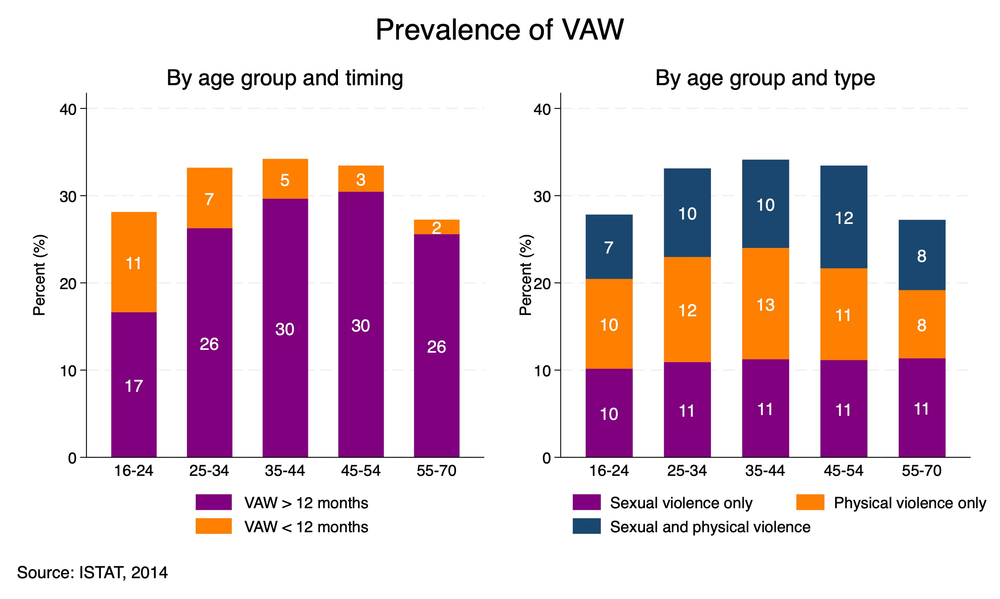
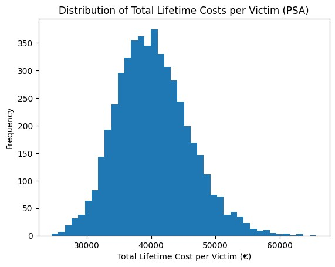
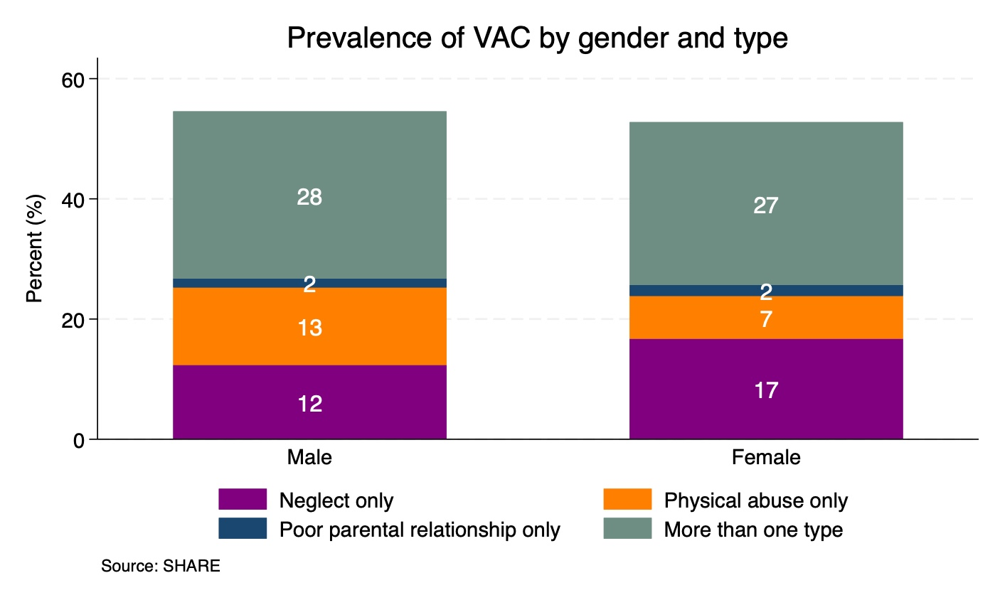

Abstract
Violence against women (VAW) and violence against children (VAC) represent major public health and societal challenges, yet evidence on their economic burden in Italy remains limited. This study aims to quantify the health and productivity costs associated with VAW and VAC using nationally representative data and an econometric approach.
We combine survey and administrative data from multiple sources, including the Italian National Institute of Statistics (ISTAT), the European Working Conditions Survey (EWCS), hospital discharge records, and the Survey of Health, Ageing and Retirement in Europe (SHARE). We estimate the association between exposure to violence and a range of health and labour-market outcomes using logistic and linear regression models, controlling for demographic characteristics. Estimated marginal effects are combined with unit-cost data to derive outcome-specific costs. Lifetime costs per victim are computed by aggregating short- and long-term effects. We conduct a probabilistic sensitivity analysis using Monte Carlo simulation to assess uncertainty.
Exposure to violence is associated with significant adverse health and economic outcomes. In the ISTAT sample, the estimated lifetime cost of VAW is €40,248 per victim, driven by both productivity losses (€19,424) and healthcare costs (€20,825). Workplace violence is associated with much higher lifetime costs, exceeding €478,000 per victim and mostly reflecting lost earnings, although this estimate rests on a small sample. Childhood violence is associated with higher rates of depression, smoking and limitations in daily activities in adulthood. Applying lifetime costs to the women who experienced violence in the previous 12 months, and adding the costs of hospital and emergency-department admissions and of feminicides, the annual economic burden of VAW in Italy is estimated at €37.5 billion, equivalent to 1.71% of GDP, with a 95% uncertainty interval of €28.1 billion to €49.1 billion (1.28%–2.24% of GDP).
Violence against women and children is associated with a substantial and persistent economic burden on Italian society. The magnitude of these costs underscores the importance of prevention and intervention policies, particularly those addressing mental health and labour-market consequences. Reducing violence could yield significant economic as well as social benefits.
Research question and contribution
How large are the health and productivity costs associated with violence against women and children in Italy? Previous Italian estimates relied mainly on accounting exercises, assumptions about service use, or costs extrapolated from other countries. This paper instead estimates how health and labour-market outcomes differ between victims and observationally similar non-victims in Italian microdata, then values those differences using Italian unit costs.
The analysis covers both VAW and VAC within a common framework, distinguishes short- and long-term associations where the data permit, and quantifies uncertainty around the headline VAW estimates.
Data and approach
The study combines four principal data sources. The 2014 ISTAT Violence Against Women Survey measures physical and sexual violence since age 16 and records when the most recent episode occurred. The European Working Conditions Survey provides evidence on violence, harassment and bullying in the workplace. SHARE records adverse childhood experiences retrospectively among adults aged 50 and over. Hospital-discharge and emergency-department records capture violence-related admissions; NGO records provide information on feminicides.
Regression models estimate the association between violence and outcomes including employment, part-time work, wages, insomnia, depression, headaches, smoking and limitations in daily activities. These estimates are combined with healthcare prices, earnings and other Italian unit costs to calculate costs per victim and aggregate burdens.
Prevalence
In the ISTAT survey, 31.5% of women aged 16–70 report physical or sexual violence since age 16, and 4.5% report an episode within the previous 12 months. Exposure varies by age and includes physical violence, sexual violence, or both.

Main findings
The lifetime cost of VAW is about €40,000 per victim. The estimate comprises €19,424 in productivity losses and €20,825 in healthcare costs. Mental health is the largest channel: depression and insomnia account for more than 80% of the estimated lifetime cost per victim, and most costs accrue after the first year.
The annual burden of VAW is €37.5 billion. Applying the per-victim estimates to approximately 928,000 women reporting violence in the previous year, then adding hospital, emergency-department and feminicide costs, gives an annual burden equivalent to 1.71% of Italian GDP in 2024.
The result remains large under parameter uncertainty. A Monte Carlo sensitivity analysis places the annual burden between €28.1 billion and €49.1 billion with 95% probability, or 1.28%–2.24% of GDP.

Workplace violence may carry especially large labour-market costs. The estimated lifetime cost is approximately €479,000 per victim, mostly through lost earnings. This figure is more uncertain: it is based on a smaller sample and assumes that short-term wage effects persist. It is therefore reported separately and is not added to the aggregate VAW burden.
The consequences of childhood violence persist into later life. Adults reporting physical abuse, neglect or a poor parental relationship before age 17 are more likely to experience depression, smoking and limitations in daily activities decades later. Hospital and emergency records capture only a small part of this burden, much of which emerges in adulthood.

Interpretation and limitations
The estimates are based on cross-sectional associations after controlling for observed characteristics; they should not be interpreted as causal effects. The costing also requires assumptions about how long health and productivity differences persist. Applying lifetime costs to every woman reporting violence in the previous 12 months may overstate the annual cost of newly occurring violence.
At the same time, several important components are omitted, including costs to the criminal-justice system, anti-violence centres, shelters and social services, as well as pain, suffering and other intangible costs. These omissions work in the opposite direction. The central conclusion—a large and persistent burden—remains across the sensitivity analysis.
Policy implications
Violence is not only a human-rights and public-health emergency but also a major economic concern. The prominence of depression, insomnia and other psychological conditions points to the value of timely and sustained mental-health support. The persistence of VAC-related outcomes makes prevention and early-life intervention especially important, while the labour-market findings support stronger employer policies, reporting mechanisms and job protection for victims. Better linked data across healthcare, employment, social services and the justice system would also allow Italy to monitor the burden and evaluate which interventions are most effective.